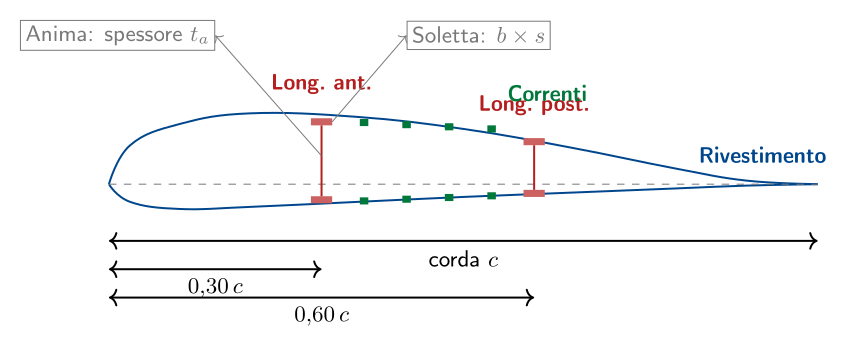
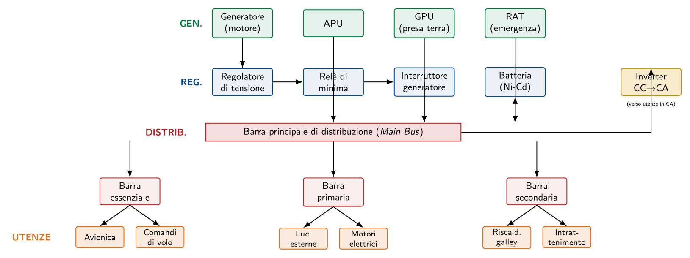

Esame di Stato 2015
Velivolo da turismo · Sistema di pressurizzazione · Materiali compositi
La prova del 2015 propone quattro quesiti che attraversano in maniera sistematica le tematiche centrali del corso: la costruzione delle strutture alari con i relativi materiali di impiego, la rappresentazione grafica di un cassone alare dimensionato, lo studio dei fenomeni aeroelastici e, infine, la descrizione dell'impianto elettrico di bordo. Nei paragrafi seguenti viene fornita una risposta completa a ciascun quesito.
Soluzioni costruttive per le strutture alari e materiali impiegati
Elementi costitutivi del cassone alare
Prima di esaminare le tipologie strutturali è opportuno richiamare brevemente la funzione dei singoli elementi:
- Longheroni
- costituiscono la spina dorsale dell'ala. Nel velivolo monoplano a sbalzo possono essere assimilati a travi a mensola incastrate in fusoliera. Sono formati da un'anima (che assorbe il taglio) e da una coppia di solette o correnti che assorbono il momento flettente mediante sforzi assiali di trazione e compressione. In volo diritto, essendo la portanza diretta verso l'alto, la soletta superiore è compressa mentre quella inferiore è tesa: per questa ragione la soletta superiore può presentare una sezione maggiore, dato che molti materiali resistono meglio a trazione che a compressione (per fenomeni di instabilità).
- Centine
- sono gli elementi trasversali aventi la forma del profilo alare. Hanno il compito di mantenere la sagoma aerodinamica voluta, ripartire i carichi locali verso longheroni e correnti, e fungere da nodo di attacco per impianti, comandi e superfici mobili.
- Correnti
- sono elementi longitudinali di sezione minore (a Z, a C, a L, a T), interposti tra le solette dei longheroni, che integrano la resistenza a flessione collaborando con il rivestimento e contribuiscono a evitarne l'instabilità per imbozzamento.
- Rivestimento
- è la pelle esterna dell'ala. Crea la barriera tra il flusso in depressione del dorso e quello in sovrappressione del ventre; quando partecipa attivamente all'assorbimento di taglio, torsione e flessione si dice rivestimento lavorante, in caso contrario rivestimento di forma.
Tipologie di strutture alari
A seconda del numero di longheroni presenti nella struttura, si distinguono tre soluzioni costruttive principali.
Ala monolongherone.
È costituita da un longherone principale a cui è affidata la totalità della resistenza a flessione e taglio, e da un longherone secondario (detto anche falso longherone) posto a circa $\tfrac{1}{3}$ della corda dal bordo d'uscita. Il longherone principale è collocato nella sezione di massimo spessore del profilo: in tal modo, a parità di momento flettente, l'aumento del braccio fra le solette riduce gli sforzi assiali e consente di adottare sezioni più piccole. Il falso longherone serve essenzialmente da elemento di collegamento tra le centine e da supporto per gli attacchi di alettoni, flap e freni aerodinamici. La resistenza torsionale è affidata al solo D-nose, ossia al rivestimento rigido del bordo d'attacco compreso fra il becco e l'anima del longherone principale. Questa soluzione è tipica di ULM, alianti e velivoli monomotore leggeri.Ala bilongherone.
Nei velivoli di maggiori dimensioni e nei plurimotori si ricorre alla soluzione a due longheroni, il primo posizionato tipicamente al 30 % della corda alare, il secondo al 60 %. I due longheroni, insieme al rivestimento superiore e inferiore, formano una struttura tubolare chiusa — il cassone alare propriamente detto — estremamente rigida sia a flessione che a torsione. Le anime dei longheroni assorbono il taglio, le solette e i correnti longitudinali lavorano a flessione, mentre il momento torcente è equilibrato dal flusso di taglio sull'intero contorno chiuso del cassone. Questa configurazione facilita l'attacco delle gondole motrici e dei carrelli retrattili, e consente di alloggiare nel cassone i serbatoi integrali di carburante.Ala trilongherone e multilongherone.
Nell'ala trilongherone il longherone centrale, posto in corrispondenza della massima spessore (circa al 32 % della corda), assorbe il momento flettente, mentre due longheroni ausiliari (a circa il 15 % e il 65 % della corda) formano due cassoni torsionalmente rigidi. La soluzione, storicamente impiegata nelle costruzioni in legno della Marchetti, riunisce i pregi delle ali mono- e bilongherone. Oggi viene utilizzata soprattutto nei velivoli militari da combattimento per ragioni di fail-safe: la ridondanza degli elementi resistenti realizza una struttura multiple-load-path in grado di mantenere la propria integrità anche dopo il danneggiamento di un singolo elemento (battle damage tolerance). Un caso particolare è l'ala a cassone triangolare, tipica dei velivoli supersonici a delta.Materiali impiegati
I materiali aeronautici si caratterizzano per un elevato rapporto resistenza/peso (SWR, strength-to-weight ratio) abbinato a omogeneità, resistenza alla corrosione, comportamento a fatica noto e reperibilità a costi ragionevoli. Le famiglie principali sono illustrate nella tabella seguente.
| Famiglia | Caratteristiche e impiego tipico | Esempi |
| Leghe Al-Cu (serie 2xxx) | Ottima resistenza a trazione e fatica; impiegate per pannellatura di fusoliera e rivestimento del ventre dell'ala (carichi prevalenti di trazione). | 2024 (Avional 24) |
| Leghe Al-Zn (serie 7xxx) | Elevata resistenza a compressione; impiegate per il dorso dell'ala e per longheroni fortemente sollecitati. | 7075 (Ergal 55), 7050 |
| Acciai legati alto-resistenziali | Particolari ad altissima sollecitazione: attacchi del carrello, perni di cerniera, bulloneria di forza. | 40NiCrMo7, 30CrMoV9 |
| Leghe di titanio | Componenti soggetti ad alte temperature e fatica: gondole motore, attacchi motore, parti di cellule supersoniche. | Ti-6Al-4V |
| Materiali compositi (CFRP, GFRP) | Elementi a bassa-media sollecitazione, superfici mobili, parti secondarie; nei velivoli moderni anche elementi primari (B787, A350). | Fibra di carbonio/epossidica |
| Strutture sandwich (honeycomb) | Pannelli a elevata rigidezza specifica: superfici mobili, paratie, pavimenti. | Nido d'ape in lega Al o Nomex |
| Laminati ibridi (FML) | Combinano lamiere di Al e composito; eccellente resistenza a fatica e impatto. | GLARE (impiegato sull'A380) |
A titolo indicativo, in un moderno velivolo da trasporto civile come il Boeing B757 la ripartizione percentuale in peso è la seguente: alluminio e sue leghe 78 %, acciaio 12 %, titanio 6 %, compositi 3 %, altri 1 %. Nei velivoli di ultima generazione (B787, A350) la quota dei compositi supera il 50 % in peso, segno di una transizione tecnologica ormai matura.
Disegno d'assieme della struttura dimensionata
Questo quesito è di natura grafica: il candidato deve riportare in scala il disegno d'assieme della sezione del cassone alare precedentemente dimensionata, completo delle quote essenziali. Pur trattandosi di un'esecuzione personale, è utile ricordare le regole di buona rappresentazione che il disegno deve rispettare.
Procedura di esecuzione del disegno
- Scelta della scala. Per la sezione di un cassone alare di velivolo da turismo o ULM, la scala consigliata è $1:5$ o $1:10$; per velivoli di trasporto regionale si scende a $1:20$ o $1:25$. La scala va indicata esplicitamente nel cartiglio.
- Tracciamento del profilo. Si riporta in vera grandezza il profilo aerodinamico (NACA, GA(W), o profilo proprietario) tracciandone la linea media e la corda di riferimento.
- Posizionamento dei longheroni. Si individuano sulla corda i punti di posizionamento dei longheroni (per un'ala bilongherone tipicamente al 30 % e al 60 % della corda).
- Disegno delle solette e delle anime. Si rappresentano le sezioni rettangolari delle solette superiore e inferiore di ciascun longherone, con le quote di larghezza $b$, altezza $h$ e spessore $s$ ricavate dal dimensionamento. Le anime, di spessore $t_a$, vengono campite con tratteggio inclinato.
- Inserimento dei correnti. Si riportano i correnti longitudinali interposti fra le solette, distanziati con passo costante $\ell$ e quotati con la sezione caratteristica (a Z, a C, a L).
- Tracciamento del rivestimento. Si rappresenta il rivestimento dorsale e ventrale come una linea di spessore $t_r$, quotando lo spessore.
- Quote. Devono essere indicate le quote principali: corda alare $c$, posizione dei longheroni rispetto al becco, altezza dei longheroni, spessore di solette/anime/rivestimento, passo dei correnti.
- Cartiglio. Si compila con denominazione del pezzo, scala, materiali (es.\ "Solette: lega 7075-T6; Anime e correnti: lega 2024-T3; Rivestimento: 2024 Alclad"), data, autore.
Schema di riferimento
A titolo orientativo si riporta nella figura seguente la rappresentazione schematica di una sezione di cassone alare bilongherone, con gli elementi costitutivi quotati simbolicamente.

Cause e fenomeni connessi all'aeroelasticità delle strutture
Origine dei fenomeni aeroelastici
Le strutture aeronautiche sono per loro natura deformabili: a fronte di un carico aerodinamico applicato, l'ala (o l'impennaggio) subisce deformazioni di flessione e torsione che, a loro volta, modificano la distribuzione di pressioni sul profilo e quindi la forza aerodinamica stessa. Si genera così un accoppiamento che può evolvere in tre modi:
- Stabile: la deformazione provoca una variazione di carico che la riduce; il sistema converge a una nuova configurazione di equilibrio.
- Marginalmente stabile: le oscillazioni si mantengono di ampiezza costante.
- Instabile: la deformazione genera un carico che la incrementa ulteriormente; l'ampiezza cresce nel tempo fino al collasso.
Il parametro discriminante è la velocità di volo: ogni fenomeno aeroelastico è caratterizzato da una propria velocità critica oltre la quale l'instabilità si manifesta. Le normative di certificazione (FAR/CS-23 e -25) impongono che tutte le velocità critiche siano superiori al 120 % della velocità massima di progetto $V_D$.
Fenomeni di aeroelasticità statica
Divergenza torsionale.
È il più classico fenomeno di instabilità aeroelastica statica e interessa principalmente l'ala. La portanza, applicata nel centro di pressione (in genere a circa $\tfrac{1}{4}$ della corda), genera un momento torcente attorno al centro elastico della sezione. Tale momento incrementa l'angolo di incidenza geometrico, il quale a sua volta produce un aumento di portanza, e quindi del momento. Il bilancio fra il momento aerodinamico (che tende a deformare) e il momento di richiamo elastico (che tende a riportare in posizione) dipende dal quadrato della velocità: esiste pertanto una velocità di divergenza $V_D^*$ oltre la quale le forze elastiche non sono più sufficienti a equilibrare quelle aerodinamiche e l'angolo di torsione cresce illimitatamente fino alla rottura per torsione. Il fenomeno è particolarmente critico nelle ali a freccia negativa (forward-swept), dove l'accoppiamento flesso-torsionale aggrava il problema.Inversione dei comandi (control reversal).
Si manifesta quando, all'aumentare della velocità di volo, la deflessione di una superficie mobile (tipicamente un alettone) provoca una torsione locale del profilo di segno opposto a quello atteso. Ne risulta un momento di richiamo che annulla, e oltre una certa velocità (velocità di inversione $V_R$) addirittura inverte, l'efficacia del comando: tirando la barra a destra, il velivolo rolla a sinistra. Il rimedio classico è l'uso di alettoni in posizione interna, oppure il ricorso a comandi differenziali e a spoiler ausiliari per il controllo di rollio alle alte velocità.Fenomeni di aeroelasticità dinamica
Flutter.
È il fenomeno aeroelastico dinamico più temibile: si tratta di un'oscillazione autoeccitata che nasce dall'accoppiamento di due o più modi di vibrazione strutturale (tipicamente flessione e torsione dell'ala) attraverso le forze aerodinamiche non stazionarie. Al di sotto di una velocità di flutter $V_F$, eventuali perturbazioni vengono dissipate dallo smorzamento aerodinamico; al di sopra di $V_F$, lo smorzamento diviene negativo e l'ampiezza delle oscillazioni cresce esponenzialmente, conducendo in pochi secondi al cedimento catastrofico. Per ridurre la suscettibilità al flutter si adottano accorgimenti progettuali quali:- l'avanzamento del centro di massa verso il bordo d'attacco mediante contrappesi (mass balance) sulle superfici mobili;
- l'aumento della rigidezza torsionale del cassone alare (incrementando lo spessore del rivestimento del bordo d'attacco resistente a torsione);
- l'irrigidimento degli attacchi di alettoni, equilibratori e timone.
Buffeting.
È una vibrazione forzata indotta da un flusso aerodinamico turbolento o separato, che investe una superficie posta a valle (tipicamente l'impennaggio di coda investito dalla scia dell'ala in stallo). A differenza del flutter, il buffeting non è autoeccitato: l'ampiezza dell'oscillazione è limitata dall'energia del flusso eccitante. Se prolungato, può tuttavia produrre danni significativi per fatica.Galloping e oscillazioni indotte da vortici.
Tipici di elementi snelli a sezione non circolare (montanti, antenne, prese d'aria), si manifestano come oscillazioni a bassa frequenza eccitate dal distacco periodico di vortici di Kármán; rappresentano un problema soprattutto per la fatica.Rimedi progettuali
In sintesi, le strategie progettuali per contenere i fenomeni aeroelastici sono:
- Aumento della rigidezza strutturale, in particolare torsionale, mediante un'adeguata scelta della sezione del cassone alare e dello spessore del rivestimento.
- Bilanciamento di massa delle superfici mobili: il centro di massa della superficie deve trovarsi sull'asse di cerniera o leggermente in avanti.
- Limitazione della velocità di volo mediante l'inviluppo di volo certificato (diagramma V-n), con margini di sicurezza imposti dalla normativa.
- Analisi modale preliminare in fase di progetto e prove di vibrazione al suolo (ground vibration test) prima del primo volo.
- Soppressori attivi del flutter (per velivoli avanzati): sistemi a controllo digitale che modulano la deflessione di superfici mobili in funzione dei modi di vibrazione rilevati da accelerometri di bordo.
Schema dell'impianto elettrico di bordo e principali utenze
Tipi di alimentazione
A bordo si utilizzano due tipi di corrente, ciascuno con vantaggi e svantaggi specifici, riassunti nella tabella seguente.
| Tipo | Vantaggi | Svantaggi |
| Corrente continua (28 V) | Facile collegamento in parallelo di più generatori; possibilità di impiego di batterie; forte coppia di spunto nei motori; facile controllo dei motori. | Motori pesanti e complessi (collettori e spazzole); tensioni poco "maneggevoli"; necessità di convertitori per le utenze in CA. |
| Corrente alternata (115/200 V, 400 Hz) | Tensione facilmente trasformabile; sezione dei cavi ridotta a parità di potenza con risparmio di peso; alternatori più compatti dei generatori a spazzole. | Difficile collegamento in parallelo dei generatori; necessità di mantenere costante il numero di giri del rotore; impossibilità di immagazzinare energia in batterie. |
I velivoli leggeri adottano generalmente impianti primari in corrente continua a 28 V, con eventuali utenze in alternata alimentate tramite inverter statici. I grandi velivoli da trasporto adottano un impianto primario in corrente alternata trifase 115/200 V a 400 Hz, con barre in continua alimentate tramite trasformatori-raddrizzatori (TRU, Transformer-Rectifier Unit). La frequenza elevata di 400 Hz consente di ridurre dimensioni e pesi di trasformatori e motori rispetto agli standard industriali (50/60 Hz).
Sezione di generazione
L'energia elettrica è prodotta da generatori (dinamo o alternatori) azionati meccanicamente da:
- i propulsori principali, attraverso opportuni riduttori (un generatore per motore nei plurimotori; talora due generatori sull'unico motore nei monomotori);
- l'APU (Auxiliary Power Unit), una piccola turbina a gas in coda alla fusoliera, utilizzata a terra a motori spenti e, su molti velivoli, anche in volo come backup;
- la RAT (Ram Air Turbine), un'elichetta estraibile in caso di emergenza che, spinta dal vento relativo, aziona un piccolo generatore e/o una pompa idraulica;
- la presa esterna (GPU, Ground Power Unit) per l'alimentazione del velivolo a terra senza accendere l'APU.
Una riserva sempre disponibile è costituita dagli accumulatori (batterie), che assolvono tre funzioni: sorgente di emergenza in caso di avaria del generatore, batteria-tampone per assorbire i picchi di corrente e fonte di alimentazione a motori spenti. Le batterie tipicamente impiegate in aviazione sono al piombo-acido, allo zinco-argento (Zn-Ag) o al nichel-cadmio (Ni-Cd), con quest'ultima soluzione preferita nei velivoli moderni per la robustezza e la lunga vita utile.
Sezione di regolazione e distribuzione
L'energia generata viene portata a barre di carico (busbar, dette anche barre omnibus), nodi metallici da cui si dipartono le linee verso le singole utenze. La distribuzione segue un criterio di ridondanza gerarchica: le utenze sono classificate per importanza e collegate a barre di diverso livello.
- Barre essenziali (essential bus)
- alimentano le utenze indispensabili al volo (avionica primaria, comandi di volo, strumenti di emergenza). Sono sempre collegate a una sorgente di potenza, anche in condizioni degradate.
- Barre primarie (main bus)
- alimentano le utenze importanti ma non vitali (illuminazione di bordo, riscaldamento, comunicazioni secondarie).
- Barre secondarie (galley bus)
- alimentano le utenze di comfort (galley, intrattenimento di cabina), che possono essere escluse senza compromettere la sicurezza del volo.
A monte delle barre si trovano gli organi di regolazione (regolatori di tensione, regolatori di frequenza/CSD, sistemi di sincronismo per il parallelo) e di protezione (interruttori automatici, fusibili, relè di minima e di massima). Gli interruttori automatici (circuit breakers) sono accessibili al pilota in cabina e gli consentono di scollegare singolarmente le utenze in caso di anomalia.
Principali utenze
Le utenze elettriche di bordo si possono raggruppare per tipologia e percentuale del carico totale come riportato in tabella.
| Tipologia di utenza | Esempi | % carico |
| Resistenze (illuminazione, riscaldamento) | Luci di posizione, anticollisione, atterraggio; sbrinatori dei finestrini; antighiaccio dei tubi di Pitot; illuminazione cabina e galley. | 50–70 |
| Motori elettrici | Pompe carburante e idrauliche, attuatori dei flap e dei carrelli, ventilatori del condizionamento, motorino di avviamento. | 10–40 |
| Comandi e controlli | Relè, contattori, spie, indicatori, sensori. | 5–10 |
| Avionica | Comunicazioni VHF/HF, navigazione (VOR, ILS, GPS), radar meteo, autopilota, FMS, sistemi anticollisione (TCAS). | 5–20 |
Schema funzionale dell'impianto
Lo schema seguente rappresenta l'architettura tipica di un impianto elettrico di velivolo monomotore con generazione primaria in corrente continua, evidenziando il percorso dell'energia dal generatore alle utenze.
